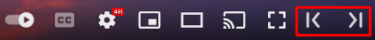

How To Use
When watching a youtube video, note that the player now has two extra buttons to the right of the fullscreen button.
Step One
Scrub to the first frame of the speedrun. Use the period and comma keys to go frame-by-frame. Then, press the left button.
Step Two
Similar to the first step, scrub to the last frame of the speedrun. Then, press the right button.
Step Three
Ta-da! The timing window should now show the "Total time", which is all of the time that passed within your selection!